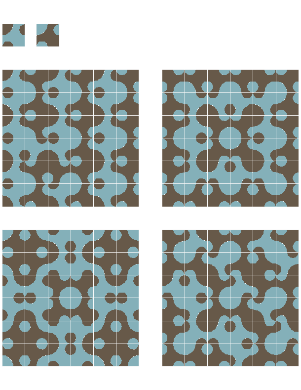
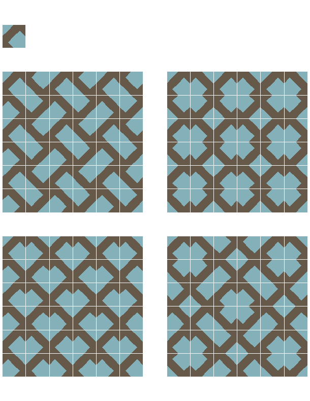

Accueil
Le site Subtilelab vous propose des motifs de pavage originaux, permettant des compositions multiples, changeantes et stimulantes.
Ces motifs vous plaisent ? Vous souhaitez pouvoir les contempler chez vous, dans votre salon, votre cuisine, votre bureau ?
Ces pavages sont aujourd’hui virtuels. Nous avons besoin de vous pour les éditer.
Notre projet actuel est d’éditer les séries Labile et Stabile en carreaux de ciment 20x20 cm. Vous êtes intéressé(e)s ? Vous avez des suggestions ?
Faites nous part de vos souhaits, questions et remarques.
Soutenez nous grâce au financement participatif (très bientôt).
Vous souhaitez réaliser une composition personnelle à partir de ces pavages ? C’est possible.
Notre application vous permet de jouer avec différentes séries, de les composer selon vos désirs, de créer puis d’éditer vos propres motifs.


Labile
Le pavage « Labile » est une série de 6 pavés bicolores aux motifs souples, pour des compositions fluides comme l’eau…
Ces pavés sont doublés par leur inverses colorés (même forme, couleurs inversées), qui multiplient les possibilités.
Dans cette double série, des pavés seuls, en groupe de 2, 3, 4, ou plus, forment des motifs multiples, originaux et évolutifs.
Les combinaisons sont innombrables.
Quelle que soit la combinaison recherchée, il existe toujours un pavé qui permet de compléter le motif, dans la continuité.
Les 6 carreaux Labile et leurs inverses colorés
Quelques exemples de motifs à partir des 2 carreaux C et Ci (inversé)
Un autre exemple de motifs à partir des 2 mêmes carreaux C et Ci (inversé)
D’autres motifs à partir des 2 carreaux A et Ai (inversé)
Quelques motifs à partir des 2 carreaux B et Bi (inversé)
D’autres motifs à partir des 2 carreaux B et B2
Un motif plus complexe, à partir des 3 carreaux B, B2 et C
Un motif étonnant à partir des mêmes 3 carreaux B, B2 et C
Quelques motifs à partir des 4 carreaux B, B2, C et Ci
4 motifs à partir des 4 carreaux D, G, Di et Gi
Stabile
Le pavage « Stabile » est une série de 6 pavés bicolores à la géométrie rigoureuse qui permet de composer des motifs complexes aux formes labyrinthiques.
Ces pavés sont doublés par leur inverses colorés (même forme, couleurs inversées), pour augmenter les combinaisons.
Dans cette double série, des pavés seuls, en groupe de 2, 3, 4, ou plus, forment des motifs multiples, originaux et évolutifs.
Les combinaisons sont innombrables.
Quelle que soit la combinaison recherchée, il existe toujours un pavé qui permet de compléter le motif, dans la continuité.
Les 6 carreaux Stabile et leurs inverses colorés
Quelques exemples de motifs à partir d’un seul carreau A
D’autres exemples de motifs à partir d’un seul carreau C
Des motifs complexes à partir des 2 carreaux A et Ai (inversé)
D’autres motifs, simples ou complexes, à partir des 2 carreaux B et Bi (inversé)
Quelques motifs simples à partir des 2 carreaux C et Ci (inversé)
Des motifs complexes à partir des 2 carreaux D et Di (inversé)
Quelques motifs à partir des 2 carreaux D et G
Un motif complexe à partir des 4 carreaux A, Ai, B et Bi
Origine des motifs
Tous les motifs présentés sur ce site ont été imaginés, développés et mis au point par Richard Danquigny, architecte à Montpellier (France).
Utilisation des pavages
Vous souhaitez utiliser ces pavages pour un projet de décoration ?
Nous pouvons vous aider à :
- réaliser des motifs personnalisés sous forme de pavages complets (réguliers ou non), ou de «tapis» délimités au sein d’un pavage plus vaste
- mesurer le nombre et le type de pavés nécessaire à la réalisation de vos motifs
Vous voulez utiliser ces motifs sur des supports, des matières, des formats spécifiques ?
Nous pouvons étudier avec vous la réalisation de ces motifs sur différents types de supports (pierre, céramique, grès, bois, …) ou d’autre formats. Vous désirez utiliser ces motifs sur vos propres supports dans un but non commer- cial ? artistique ? pédagogique ? Nous pouvons examiner ensemble votre projet, et vous offrir, le cas échéant une autorisation d’utilisation sous condition de ces motifs.
Vous souhaitez utiliser ces motifs dans un but commercial ?
Nous pouvons envisager la possibilité d’autorisation, de partenariat, de cession de droits…
Pour ces questions et pour toutes les autres (ainsi que pour vos remarques et encourage- ments), nous vous invitons vivement à nous contacter à l’adresse suivante :
contact@subtilelab.com
Vous pouvez également nous joindre par téléphone au :
+33675027205